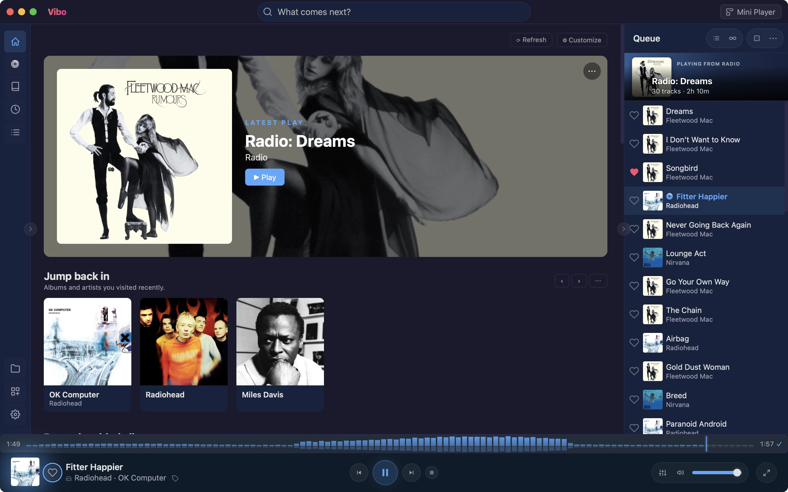
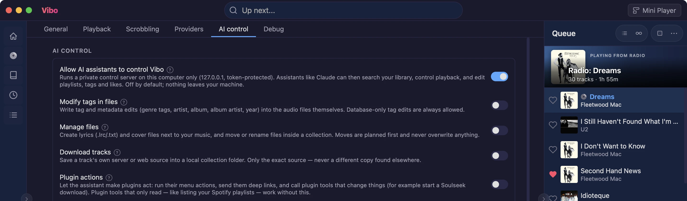
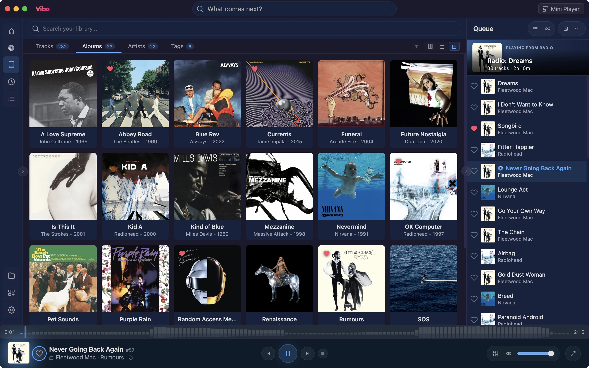
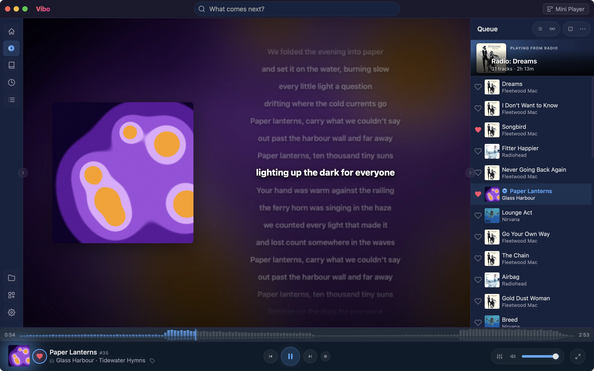
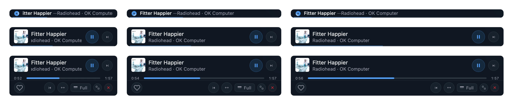

Vibo
A music player for macOS and Windows. It plays the music you already have: folders on your disk and Subsonic or Navidrome servers, in one library. Free and open source.
Download for macOS Download for Windows v1.0.121 · what changed

-
Fast and light
Rust backend, SQLite search, the system's own webview. About a 30 MB download.
-
Plugins
Two files of plain JavaScript. Streaming, lyrics, artwork, scrobbling and downloads are all plugins.
-
AI control and an API
A local MCP server and HTTP API, so an assistant or a script can run the player. Off by default.
Fast and light
- The backend is written in Rust. The library is a local SQLite database with full-text search.
- Searching a 20,000-track test library takes under 40 ms. The benchmark is in the repository (
cargo test bench_search_performance -- --ignored). - The interface runs in the system's own webview (WebKit on macOS, WebView2 on Windows). No browser engine is bundled, so the download is about 30 MB, playback engine included.
- Playback uses libmpv. Files play as they are, with no transcoding step.
- Folders are scanned in the background and watched for changes, so the app stays usable while a large library is read.
Plugins
The core plays your files and your server. Everything that talks to an outside service is a plugin you choose to install from the in-app gallery: Last.fm, online lyrics, cover art, YouTube through yt-dlp, Spotify browsing, Soulseek, and others.
A plugin is a manifest.json and an index.js, with no build step. It can add:
- music sources and stream resolvers
- sections on artist, album and track pages (bios, lyrics, similar artists)
- shelves on the home screen, sidebar views and context-menu items
- scrobblers and download providers
- tools that an AI assistant can call
Each plugin declares the permissions it needs, and the app shows them before it installs. Installed plugins update from their own GitHub releases.
AI control and the control API
Turn on Settings → AI control and Vibo starts a small server on your computer (127.0.0.1 only, with an access token). Two ways to use it:
- MCP. Vibo includes an MCP server for Claude Desktop, Claude Code or any MCP client. The settings page copies the config for you. The assistant can search the library, play and queue music, edit playlists and tags, start radio, and call your plugins' tools.
- HTTP API. The same server is a plain JSON API, so your own scripts can drive the player. A ready-made Claude Code skill documents every endpoint.
It is off until you turn it on. Writing to files, managing files, downloading, plugin actions and deleting each have their own switch. File moves and deletions are shown as a plan first, and deleted files go to the trash. What each switch allows · An example session

Your files and your server, together
Add folders and Subsonic or Navidrome servers. Vibo reads the tags and keeps everything in one library and one queue. Search covers artists, albums, tracks and tags and ignores accents.

Playback
- Gapless playback and crossfade from 0 to 10 seconds.
- Bit-perfect and exclusive output for external DACs.
- ReplayGain and a 10-band equalizer.
- Video files play too, in the same queue.
Radio and the home screen
Start a station from any song, artist or tag. It is built from your own library, and you can tune how much of the same artist it plays. When the queue ends, auto-continue can keep going. The home screen shows what you played last, a few mixes, and albums you have not played in a while.
Lyrics
Synced lyrics scroll with the song; click a line to jump to it. Vibo reads .lrc files next to your music. A lyrics plugin can fetch the rest.

Mini player
A small window that can stay on top of everything else, in three layouts.

Good to know
- No account and no ads. Your library, likes and history stay on your computer.
- Vibo sends anonymous usage stats; one switch turns them off.
- It does not come with music. Without plugins it plays only what you add.
- macOS 11 or later on Apple Silicon, or Windows 10/11 (64-bit).
- The code was written by an AI coding assistant, directed and reviewed by the author. How it was made, and Jaangle, the C++ player that came before it.